Learning: Neural Networks¶
Linear Regression and Classification¶
Linear Regression: The problem of fitting a linear function to a set of training examples, in which the input and target features are numeric.
where \overline w=\langle w_0,w_1,\dots,w_n\rangle is a tuple of weights.
To make w_0 not be a special case, new feature X_0 is always 1.
Suppose E is a set of examples. The sum-of-squares error on E for Y is:
The weights that minimize the error can be computed analytically. A more general approach, is to compute the weights iteratively.
Gradient Descent¶
An iterative method for finding the minimum of a function.
- Starts with an initial set of weights
- In each step, it decreases each weight in proportion to its partial derivative.
where \eta, the gradient descent step size, is called the learning rate.
- Given as the input to the learning algorithm
Linear Learner¶
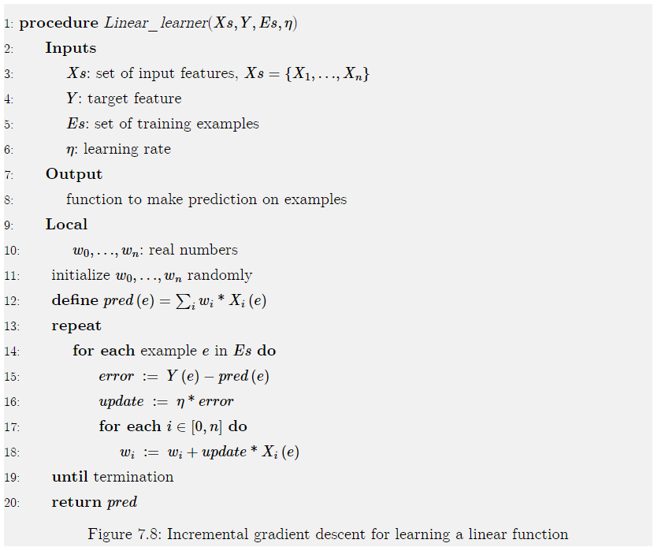
- Termination is usually after some number of steps, when the error is small or when the changes get small.
Not strictly implementing gradient descent.
Weights change while it iterates through the examples (Incremental gradient descent)
If examples are selected at random, its called stochastic gradient descent
Batched gradient descent updates the weights after a batch of examples.
- If batch is equal to all examples, its equivalent to gradient descent.
Squashed Linear Functions¶
Consider binary classification. (domain of target is \{0,1\})
The use of a linear function does not work well for such classification tasks; a learner should never make a prediction of greater than 1 or less than 0.
A squashed linear function is of the form:
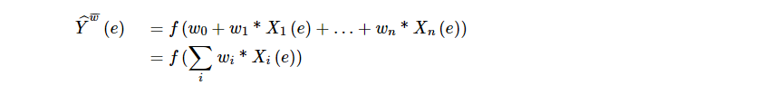
where f, an activation function, is a function from the real line [-\infty,\infty] into some subset of the real line, such as [0,1]
- A prediction based on a squashed linear function is a linear classifier.
- A simple activation function is the step function, step_0(x), defined by:
One differentiable activation function is the sigmoid or logistic function:
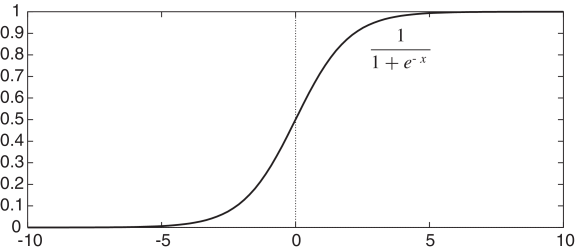
$$ sigmoid(x)=\frac{1}{1+e^{-x}} $$ This function squashes the real line into the interval (0,1)
- Appropriate for classification
- Differentiable
- \frac{d}{dx}sigmoid(x)=sigmoid(x)*(1-sigmoid(x))
The problem of determining weights for the sigmoid of a linear function that minimize an error on a set of examples is called logistic regression
To optimize the log loss error for logistic regression, minimize the negative log-likelihood:
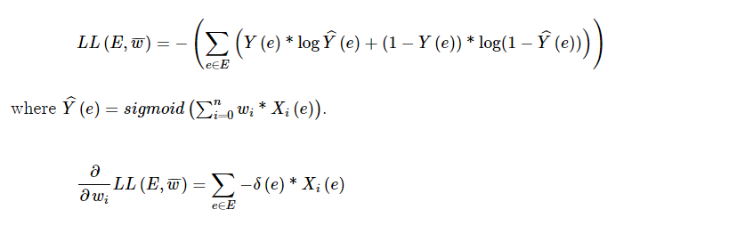
where \delta(e)=Y(e)-\hat Y^{\overline w}(e)
The Linear\_learner algorithm can be modified to carry out logistic regression to minimize log loss.
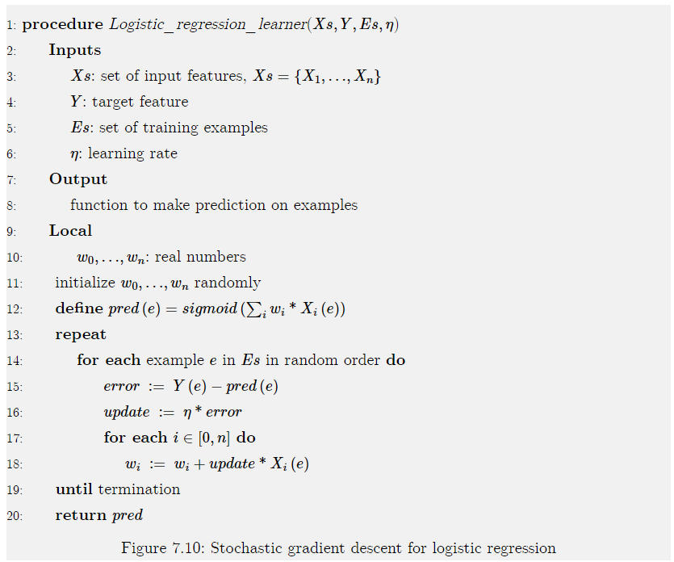
Linearly Separable¶
Consider each input feature as a dimension.
If there are n features, there will be n dimensions.
A hyperplane in an n-dimensional space is a set of points that all satisfies a constraint that some linear function of the variable is zero.
The hyperplane forms a (n-1)-dimensional space.
- In 2D that's a line
- In 3D that's a plane
A classification is linearly separable if there exists a hyperplane where the classification is true on one side of the hyperplane and false on the other side.
Figure 7.11: Linear separators for Boolean functions:
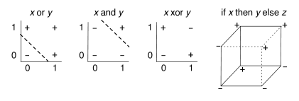
Neural Networks¶
There are many different types of neural networks. The book considers feed-forward neural networks.
- Hierarchy consisting of linear functions interleaved with activation functions
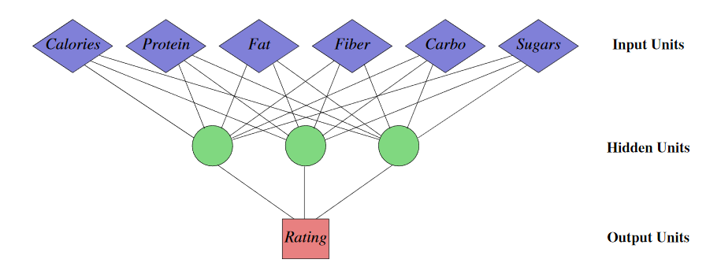
Neural network can have multiple input and target features (real-valued)
-
Discrete features can be transformed into indicator variables or ordinal features.
-
Inputs feed into layers of hidden units
- Features never directly observed
- A simple function of the units in a lower layer.
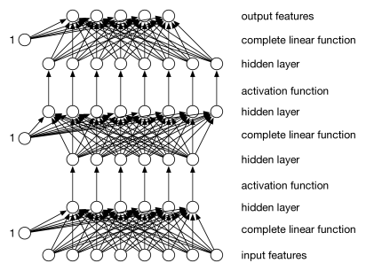
Single Neuron¶
Two step computation
- Combine inputs as weighted sum
- Compute output by activation function of combined inputs
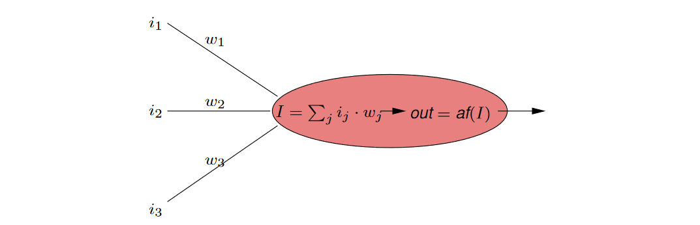
Activation Functions¶
The most common activation functions are:
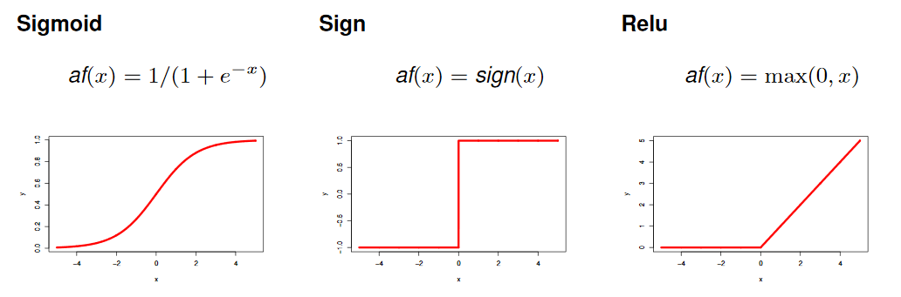
If activation function is sigmoid, i.e. out=\sigma(\sum_j i_j\cdot w_j) we also talk of squashed linear function
For the output neuron also the identity function is used: af(x)=id(x)=x
Layers¶
Each layer of units is a function of the previous layer. Each example has a value for each unit. We consider 3 kinds of layers:
-
An input layer consists of a unit for each input feature.
- Gets its value for an example from the value for the corresponding input feature for that example.
-
A complete linear layer, where each output o_j is a linear function of the input values v_i to the layer (and, as in linear regression, an extra constant input that has value “1” is added) defined by:
o_j=\sum_i w_{ji}v_i
for weights w_{ji} that are learned. There is a weight for every input-output pair of the layer. in the diagram of Figure 7.16 there is a weight for every arc for the linear functions.
-
An activation layer, where each output o_i is a function of the corresponding input value;
- thus o_i=f(v_i) for activation function f.
Typical activation functions are the
- sigmoid: \quad f(x)=1/(1+e^{-x}), and the
- rectified linear unit ReLU:\quad f(x)=\max(0,x)
For regression, where the prediction can be any real number, its typical for the last layer to be complete linear layer.
For binary classification, where the output values can be mapped to \{0,1\} it is typical for the output to be a sigmoid function of its input
- We never want to predict a value greater or less than zero.
Discrete Inputs¶
If the regression should also use discrete predictor attributes, e.g.:
replace discrete attributes with 0-1-valued indicator variables for their possible values:
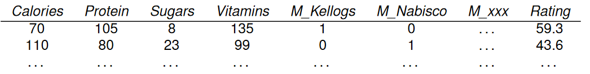
Indicator Variables¶
- For each value x_i of X with domain \{x_1,\dots,x_k\} introduce a binary feature X\_is\_x_i with values 0,1
- Encode input X=x_i by inputs
- X\_is\_x_0=0,\dots,X\_is\_x_{i-1}=0,X\_is\_x_i=1,X\_is\_x_{i+1},\dots,X\_is\_x_k=0
Numerical Encoding¶
Translate values into numbers:
- true, false \mapsto 0,1
- low,medium,high\mapsto 0,1,2
Probably not sensible:
- red,green,blue \mapsto 0,1,2
- blue is not "two times green"
Neural Networks for Classification¶
Use one output node for each class label.
Classify instance by class label associated with output node with highest output value.
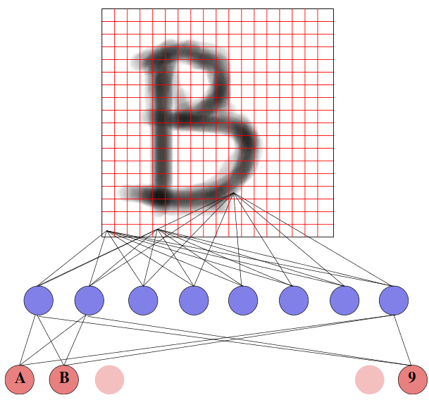
Propagation in Neural Networks¶
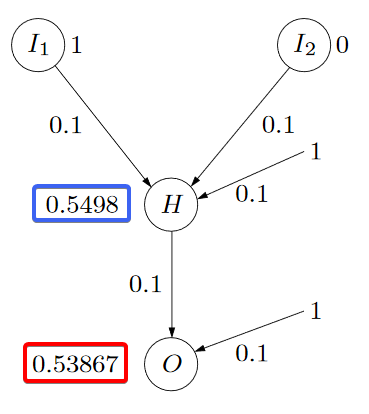
The output of neuron H is:
$$ o_H=\sigma(1\cdot0.1+0\cdot0.1+1\cdot0.1)=\color{blue} 0.5498 $$ The output of neuron O is:
The Perceptron¶
- No hidden layer
- One output neuron o
- sign activation function
Computed:
Convention from now on assume that x_0 is an input neuron with constant input value 1. Then write \bold w \cdot \bold x for w_0 x_0+w_1x_1+\dots w_n x_n
Expressive Power¶
The decision surface of a two-input perceptron is given by a straight line, separating positive and negative examples
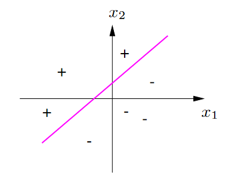
Can represent x_1 \and x_2
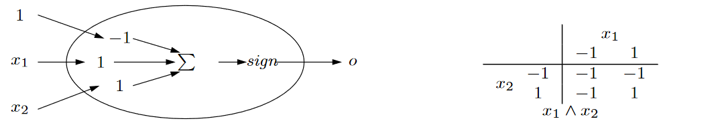
Can represent x_1 \or x_2
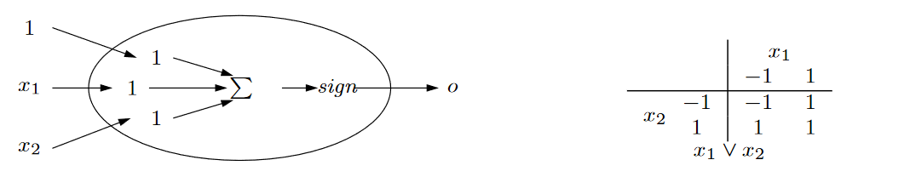
Cannot! represent x_1 \text{ xor } x_2
- The examples are not linear separable
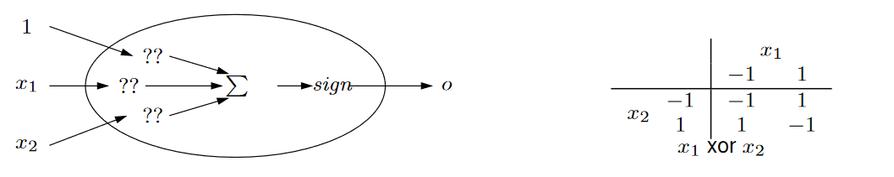
Multiple Neurons¶

Learning¶
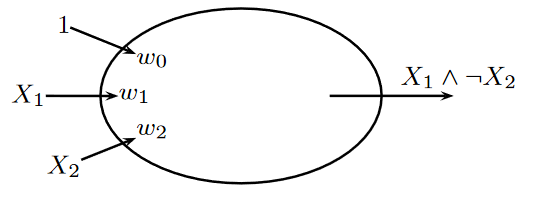
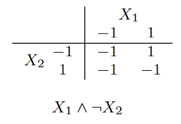
We have
- \mathcal{D}=(x_1,x_2,x_3,x_4) input vectors (cases)
- \bold t=(-1,1,-1,-1) vector of target outputs
- \bold w=(w_0,w_1,w_2) vector of current parameters
- \bold o=(o_1,o_2,o_3,o_4) vector of current outputs
We request
- \bold w^* parameters yielding \bold o = \bold t
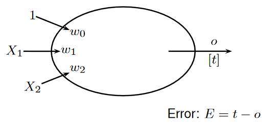
Weight Updating Procedure
- E>0 \Rightarrow o shall be increased \Rightarrow \bold x \cdot \bold w up \Rightarrow \bold w:= \bold w+ \alpha E x
- E<0 \Rightarrow o shall be decreased \Rightarrow \bold x \cdot \bold w down \Rightarrow \bold w:= \bold w+ \alpha E x
\alpha is called the learning rate
With \mathcal D linearly separable and \alpha not too large, this procedure will converge to a correct set of parameters
See example in slides 24 (appendix of this page)
Sum of Squared Errors¶
Given
- data (training examples): (x_i,y_i)\quad (i=1,\dots,N) with
- x_i: value of input features \bold X
- y_i: value of output feature Y
- a neural network that computes outputs o_i=out(x_i)
define sum of squared error
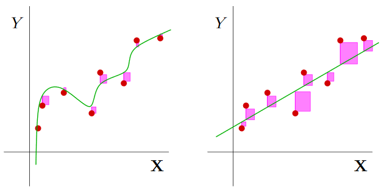
For a given dataset the SSE is a smooth, convex function of the weights
Example for n=2 and a linear activation function:
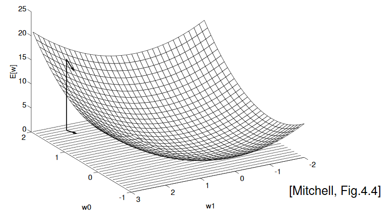
Weights \bold w that minimize E(\bold w) can be found by gradient descent
Gradient Descent Learning¶
The gradient is the vector of partial derivatives:
The partial derivatives are (with linear activation function):
$$ \frac{\partial E}{\partial w_k}=\sum_{i=1}^N(t_i-\bold w\cdot x_i)(-x_{i,k})\label{gradiant_descent} $$ Gradient descent rule:
- Initialize \bold w with random values
- repeat
- \bold w := \bold w - \eta \nabla E(\bold w)
- until \nabla E(\bold w) \approx 0
\eta is a small constant, the learning rate
Properties
- The procedure converges to the weights \bold w that minimize the SSE (if \eta is small enough)
Stochastic Gradient Descent¶
Variation of gradient descent: Instead of following the gradient computed from the whole dataset (\ref{gradiant_descent})
iterate through the data instances one by one, and in one iteration follow the gradient defined by a single data instance (x_k,t_k)
The Task of Learning¶
Given: structure and activation functions. To be learned: weights.
Goal: given the training examples
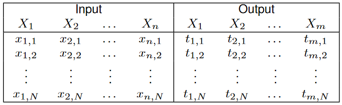
Find the weights that minimize the sum of squared errors (SSE)
$$ \sum_{i=1}^N\sum_{j=1}^m(t_{j,i}-o_{j,i})^2, $$ where o_{j,i} is the value of the jth output neuron for the ith data instance.
Back-Propagation¶
Back-propagation implements stochastic gradient descent for all weights.
There are two properties of differentiation used in back-propagation:
- Linear rule: the derivative of a linear function is given by;
- Chain rule: if g is a function of w and function f, which does not depend on w, is applied to g(w), then
Learning consists of two passes through the network for each example:
- Prediction: given the values on the inputs for each layer, compute a value for the outputs of the layer
- Back-propagation: go backwards through the layers to update all of the weights of the network.
Calculate an error term \delta_h for a hidden unit by taking the weighted sum of the error terms, \delta_k for each output units it influences.
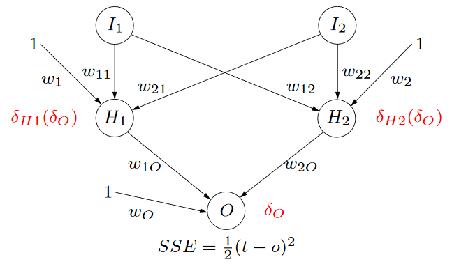
Updating Rules¶
When using a sigmoid activation function we can derive the following update rule:
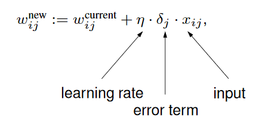
where $$ \delta_j=\begin{array}{}\left{ \begin{align} &o_j(1-o_j)(t-o_j) &&\quad \text{for output nodes}\ &o_j(1-o_j) \sum_{k=1}^m w_{jk}\delta_k &&\quad \text{for hidden nodes} \end{align}\right. \end{array} $$
See example in slides 34 (appendix of this page)